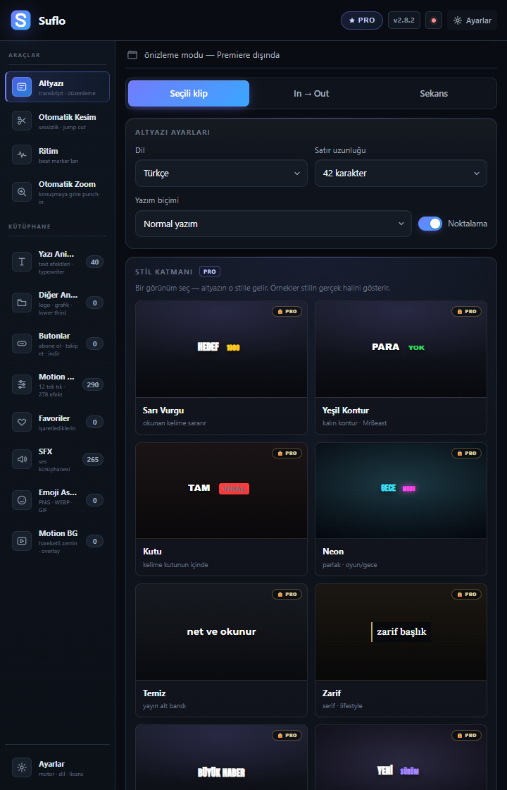
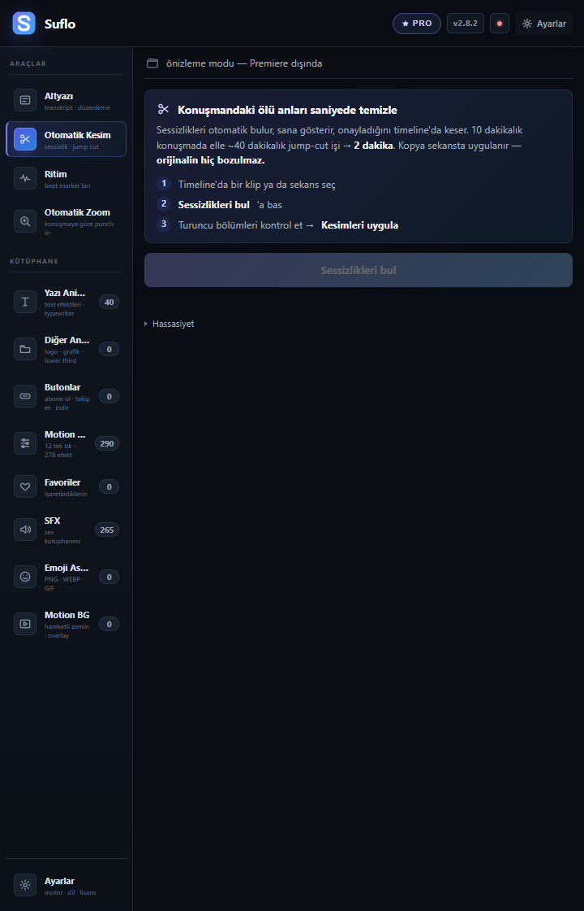
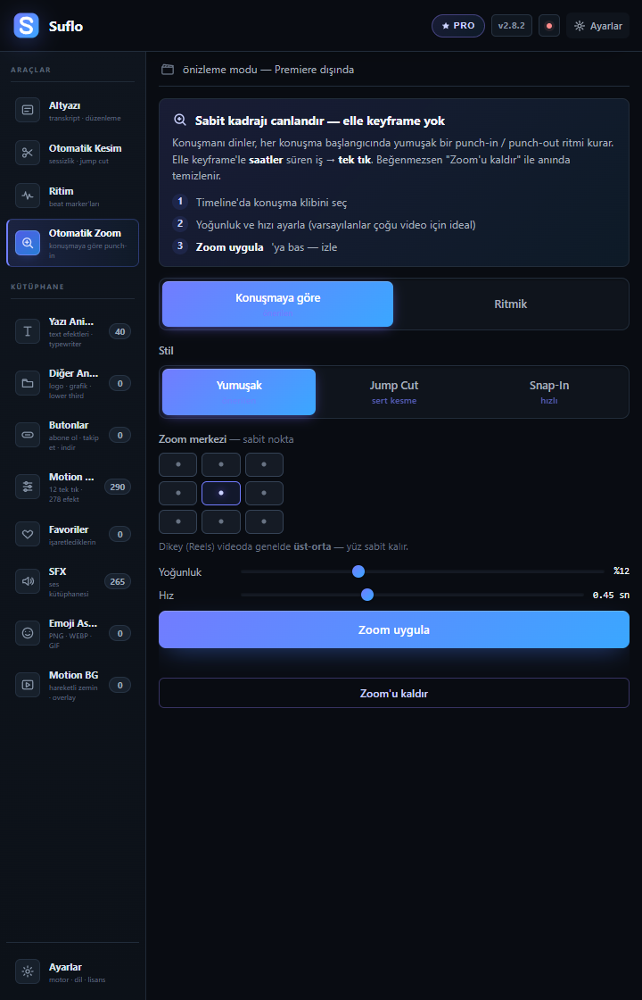
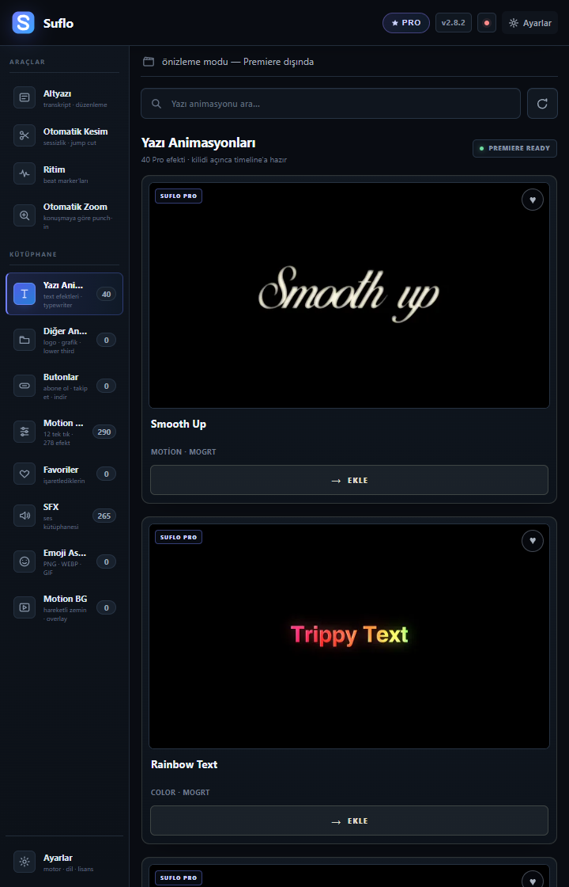
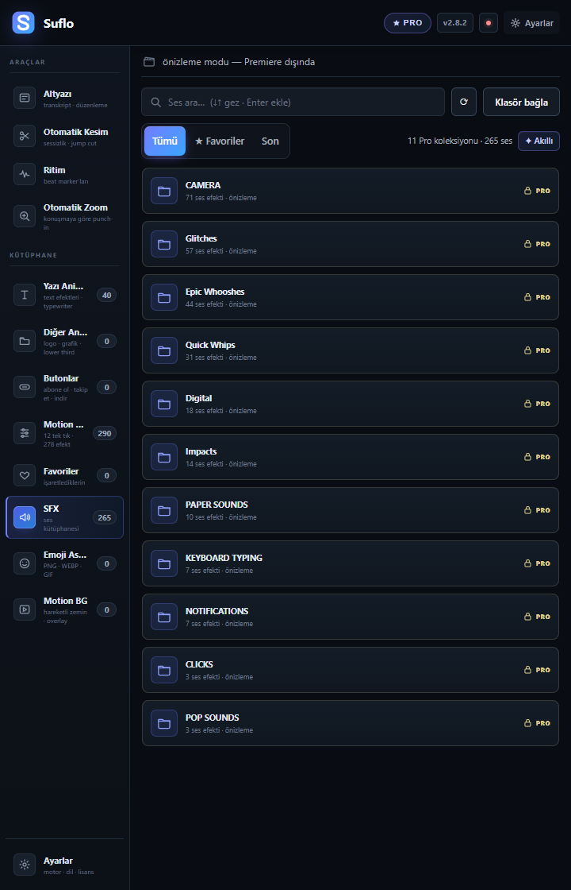
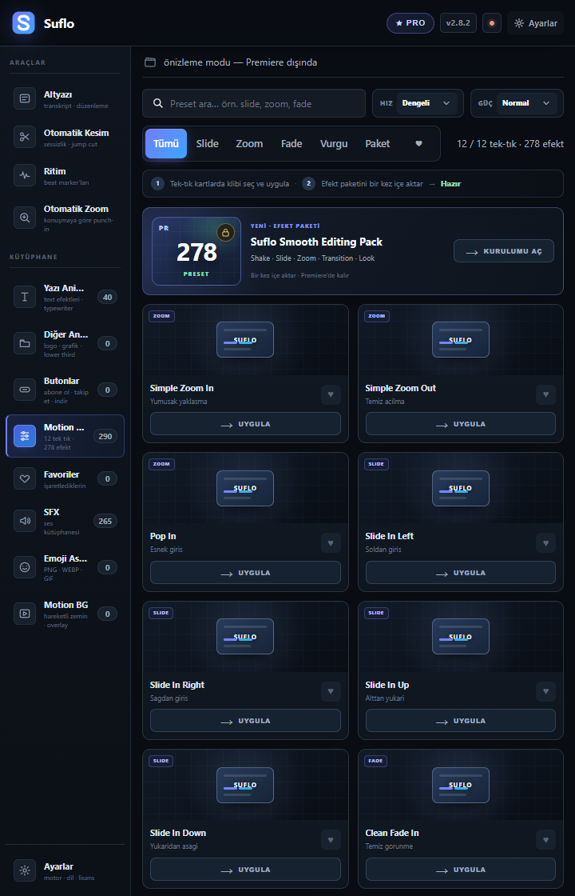

ÜCRETSİZ · SINIRSIZ · İNTERNETSİZ
PREMIERE’E
PREMIERE’E
TÜRKÇE ALTYAZI.
ÜCRETSİZ.
Türkçe dahil 99 dilde AI altyazı.
Kredi yok. Abonelik yok. Kullanım limiti yok.

DAHA HIZLI KURGU İSTEYENESUFLO PRO1.250 TL749 TL
SORUN SENDE DEĞİL
ADOBE’UN DİL LİSTESİNDE
ADOBE’UN DİL LİSTESİNDE
TÜRKÇE YOK.
Biz beklemeyi bıraktık. Premiere’in içinde çalışan kendi altyazı aracımızı yaptık.
●
SESİN BİLGİSAYARINDAN ÇIKMAZYerel AI ile internetsiz ve gizli transkripsiyon.
LOCAL AI
KARIŞIK KURULUM YOK
ÜÇ ADIM.
ÜÇ ADIM.
GERİSİ SUFLO’DA.
KURCreative Cloud üzerinden Suflo’yu yükle.
ALANI SEÇSeçili klip · In–Out · tüm sekans
DÜZELT & UYGULAMetni düzenle; caption izi veya SRT olarak çıkar.
VİDEO→AI METİN→TIMELINE
ALTYAZI0TLGERÇEKTEN ÜCRETSİZ
BAŞLAMAK İÇİN
KART GEREKMİYOR.
99 dil + yerel AITürkçe dahil, internetsiz çalışır.
Düzenlenebilir editörBöl, birleştir, zamanla, taslak kurtar.
Esnek dışa aktarmaSRT · WebVTT · TXT · Caption Track
GPU hızlandırmaUyumlu sistemlerde daha hızlı işlem.
Emoji araçlarıEmoji seçici + Emoji Assets.
Sınırsız kullanımKredi, hesap veya sayaç yok.
ÜCRETSİZ KALIR.Pro almadan da AI altyazı üretmeye devam edersin.
ARADAKİ FARK ÇOK NET
FREE ALTYAZIYI BİTİRİR.
FREE ALTYAZIYI BİTİRİR.
PRO KURGUYU BİTİRİR.
Konuşmayı yazıya çevir.
- AI altyazı
- 99 dil
- Altyazı editörü
- SRT ve caption
- Emoji araçları
Videoyu yayına hazırla.
- Magic Cut + Auto Zoom
- Beat Marker + 10 stil
- 262 MOGRT + 769 SFX
- 30 Motion BG + 290 hareket
- Pro içerik bulutu
TEKRAR EDEN İŞLERİ KISALT
ÖLÜ ANI KES.
ÖLÜ ANI KES.
VURGUYU YAKLAŞTIR.

Sessizlikleri bulur. Önizlediğin kesimleri kopya sekansa uygular.

Yumuşak, Jump Cut veya Snap‑In zoom ile konuşmaya vurgu katar.
03BEAT MARKER
Müziğin ritmini analiz eder, marker’ları timeline’a dizer.
TEK METİN · DÖRT FARKLI KARAKTER
ALTYAZINA
ALTYAZINA
BİR TARZ SEÇ.
ŞİMDİ BAŞLA
YEŞİL KONTURyüksek enerji · viralŞAK!
STICKERpop · eğlenceasıl hikâye şimdi başlıyor
ZARİFbelgesel · lifestyleYENİ SÜRÜM
MOR VURGUpremium · teknoloji10
HAZIR ALTYAZI STİLİSarı Vurgu · Kutu · Neon · Temiz · Beyaz Kalın · Daktilo ve dahası
DOSYA ARAMAK YERİNE
ARA. ÖN İZLE.
ARA. ÖN İZLE.
PLAYHEAD’E EKLE.

PREMIUM TEXT · SMOOTH UP · GOLD TEXT · CRACKED
WHOOSH · IMPACT · CLICK · CAMERA · PAPER↻
PRO İÇERİK BULUTUYeni içerikleri görür, yalnızca değişen dosyaları indirir.
OTOMATİK GÜNCEL
SATIN ALMADAN ÖNCE HER ŞEY NET
ÜCRETSİZ Mİ,
ÜCRETSİZ Mİ,
PRO MU?
ÖZELLİKFREE
0 TLPRO
749 TL
0 TLPRO
749 TL
AI altyazı + 99 dil✓✓
Editör + SRT/Caption✓✓
Emoji araçları✓✓
Magic Cut + Auto Zoom—✓
Beat Marker + 10 stil—✓
262 MOGRT + 769 SFX—✓
30 Motion BG + 290 hareket—✓
Otomatik içerik güncellemesi—✓
SADECE ALTYAZI İSTİYORSAN:Free fazlasıyla yeter.HER GÜN KURGU YAPIYORSAN:Pro iş akışını tamamlar.
LANSMAN FİYATI
DAHA AZ TIK.
DAHA AZ TIK.
DAHA ÇOK KURGU.
749TL
TEK SEFERLİK ÖDEME✓ Abonelik yok✓ 3 bilgisayar✓ 14 gün iade✓ Ömür boyu güncelleme
SUFLO PRO’YA GEÇsuflo.app/pro→
AI ALTYAZI ÜCRETSİZ KALIR.Pro; hız, stil ve içerik katmanıdır.
